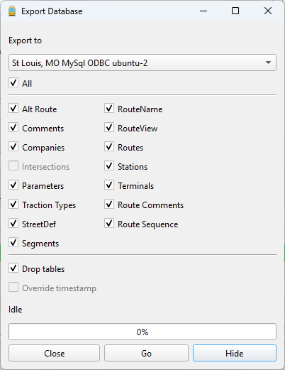

Mapper by default stores its data in SQLite 'sqlite3' files. Using this data elsewhere is as easy as copying the file for a given city
and using it whereever you want.
If the data is needed elsewhere and is needed to be stored in another database, it is possible to export data to a MySql, PostgreSql or
Sql Server (Microsoft) database via the Export database selection in the Tools menu.

A prerequisite for exporting a database is having a connection to an existing MySql, Sql Server or PostgreSql database. Such connections can be established in the Edit Connections Dialog. This presumes that you have the necessary permissions to update the database. Authority to delete and create tables is required. See Creating or modifying connections.
Upon opening the dialog, you will be presented with a number of check boxes for tables that should be exported. Checking the "All" checkbox will check all the tables. The "Drop Tables" should only be unchecked if you wish to only update records without deleting and creating the table's definitions. In that case a timestamp field will be enabled to specify the date and time of transactions to be updated.
Just click "Go" to start exporting data. Tables are exported in an order that takes into account that some tables are linked to other tables.